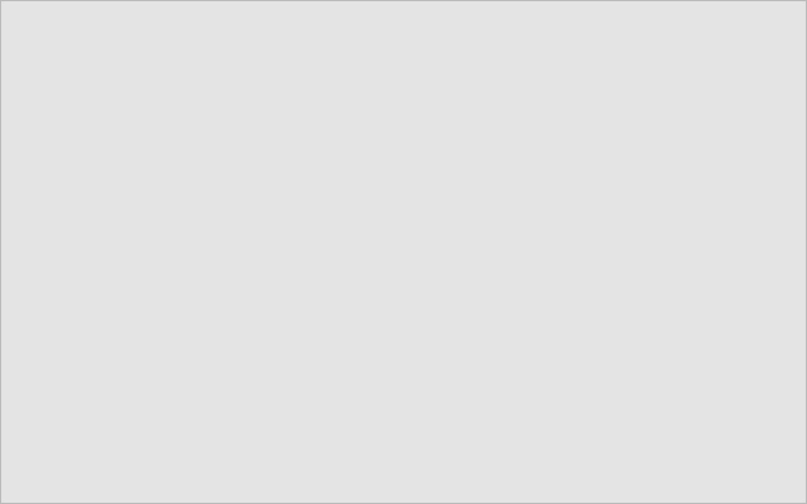

Alerts
pgCellar writes to you when something needs a human, and keeps quiet otherwise. Three channels: Telegram, mail and a signed webhook. Use one, two or all three.

What triggers a message
| Kind | When | Example title |
|---|---|---|
| Level change | A server goes from healthy to attention or failing, or from attention to failing and back | pg-main is failing, pg-main needs attention |
| Resolved | A server is healthy again (one message) | pg-main is healthy again |
| Reminder | A problem that lasts, after repeat_every |
pg-main is still failing (for 2 days) |
| Backup failed | A backup run ended with an exit code other than 0, scheduled or manual | Backup of pg-main failed |
| Drill failed | A restore drill failed | Restore drill of pg-main failed |
| Drill passed | Only with on_drill_success: true |
Restore drill of pg-main passed |
| Skipped | A scheduled backup or drill could not start | Scheduled backup of pg-main did not run |
| Daily summary | Once a day, if you ask for it | Everything is fine |
The level of a server is the one the Status page shows. Storage thresholds, old backups, a stopped WAL receiver, a failed or too-old drill all change it, so they need no message of their own: the level change covers them.
Configure the channels
Secrets never go in pgcellar.yaml. The file names the environment variables that hold them; you set those variables in the container.
alerts:
max_backup_age: 26h
repeat_every: 24h
on_drill_success: false
daily_summary: "08:30"
telegram:
token_env: PGCELLAR_TELEGRAM_TOKEN
chat_id: "-1001234567890"
mail:
host: smtp.example.com
port: 587
starttls: true
from: pgcellar@example.com
to: [dba@example.com]
user_env: PGCELLAR_SMTP_USER
password_env: PGCELLAR_SMTP_PASSWORD
webhook:
url: https://hooks.example.com/pgcellar
secret_env: PGCELLAR_WEBHOOK_SECRET
In docker-compose.yml, under environment: of the pgcellar service:
environment:
TZ: Europe/Brussels
PGCELLAR_TELEGRAM_TOKEN: "123456:ABC..."
PGCELLAR_SMTP_USER: "pgcellar@example.com"
PGCELLAR_SMTP_PASSWORD: "..."
PGCELLAR_WEBHOOK_SECRET: "a long random string"
Better: keep them in a .env file next to the Compose file (mode 0600, not in git) and reference them as ${PGCELLAR_TELEGRAM_TOKEN}.
pgCellar reads pgcellar.yaml again when it changes, so a new channel needs no restart. A changed environment variable needs a container restart, because the environment is fixed when a process starts.
| Variable | Used by | Needed |
|---|---|---|
PGCELLAR_TELEGRAM_TOKEN (any name you choose in token_env) |
Telegram | yes |
PGCELLAR_SMTP_USER, PGCELLAR_SMTP_PASSWORD (names from user_env, password_env) |
only if the SMTP server needs a login | |
PGCELLAR_WEBHOOK_SECRET (name from secret_env) |
Webhook | only to sign the body |
The names are yours. The ones above are the ones used in the examples.
Telegram
Create a bot with BotFather, copy its token into the variable. Add the bot to the chat or channel and use that chat's id (for a group, a negative number like -1001234567890). The message is sent in Telegram's HTML subset; a link opens the server in pgCellar.
host, from and at least one address in to are required. Port 587 with starttls: true (the default) upgrades the connection with STARTTLS, which is required; port 465 means implicit TLS. starttls: false sends in clear: use it only for a relay on a trusted network. AUTH PLAIN is used only when user_env is set. Messages go as plain text.
Webhook
pgCellar POSTs JSON to url. With secret_env set, the exact body is signed with HMAC-SHA256 and the result is in a header:
X-PgCellar-Signature: sha256=<hex>
To verify, compute the HMAC-SHA256 of the raw body with the same secret and compare in constant time. The body:
{
"kind": "backup_failed",
"server": "pg-main",
"level": "fail",
"title": "Backup of pg-main failed",
"lines": ["The backup (scheduled, run #212) ended with exit code 1."],
"action": "Open the server page, read the problems listed there and start with the first one.",
"url": "https://backup.example.com/servers/pg-main",
"at": "2026-10-21T02:03:14+02:00",
"text": "❌ Backup of pg-main failed\n\n- The backup (scheduled, run #212) ended with exit code 1.\n\nWhat to do: ...\n\nhttps://backup.example.com/servers/pg-main"
}
level is ok, warn or fail. text is ready to show in a chat tool. Any answer other than 2xx counts as a failure in the journal.
Set base_url in pgcellar.yaml: links in messages are built from it.
Anti-noise rules
Nobody reads a channel that cries wolf. pgCellar follows these rules:
- One message per change. A server that stays red is not announced at every refresh. It is announced when it turns red, repeated after
repeat_every(24 hours by default;0= never repeat), and a single "healthy again" follows when it recovers. - Orange to red and back are announced at once.
- The first two minutes after a start are silent. A server can look red for a minute while the status is rebuilt. Nothing is sent either while the status shown is the one reloaded from the database and not yet refreshed.
- A restart neither repeats nor forgets. The last level announced for each server, since when, and when it was said, are stored in the database.
- History is not news. The first look after the database is created only records a baseline for runs and drills.
- No channel, no state. With no channel configured, the alert engine does nothing at all. A channel added later does not replay old events; it announces the servers that are red at that moment.
- A skipped scheduled run is announced once per due time.
Alerts are decided by one pass every 30 seconds over the state pgCellar already keeps. There is no separate monitoring.
Daily summary
daily_summary: "08:30" sends one message a day at that time: the headline of the Status page, then one line per server. It goes out at most 12 hours late (so a restart at night does not send yesterday's), only with at least one server, and only with a fresh status. Empty = no summary.
⚠️ 1 server needs attention
- erp-prod ✅ · last backup 2 h ago · streaming live · restore verified 3 d ago · 1.8 TB free (57% used)
- analytics ⚠️ · last backup 31 h ago · streaming live · restore verified 5 d ago · 1.8 TB free (57% used)
What to do: Open pgCellar and start with the servers marked ❌, then the ones marked ⚠️.
Example messages
A server fails:
❌ analytics is failing
• The last backup is 53 hours old, the limit is 26.
• WAL receiver is not running.
What to do: WAL streaming: Start the receiver with "barman cron", then check that the slot exists on PostgreSQL.
Open in pgCellar
A restore drill fails:
❌ Restore drill of pg-main failed
• It failed at the step "Start PostgreSQL": the backups of this server are not proven restorable.
What to do: Open the server page, read the last restore drill and fix its failing step, then run the drill again.
Recovered:
✅ pg-main is healthy again
• The problem lasted 3 h 12 min.
These examples are illustrative: the exact lines depend on the problem found. The wording is dry on purpose; errors say what to do.
Test and journal
The Alerts page (admin) shows which channels are configured, whether each environment variable is set (never its value), a Send a test message button per channel, and the latest 2000 messages sent, with the outcome of each. Over the API: GET /api/v1/alerts and POST /api/v1/alerts/test (body {"channel": "telegram"}, or empty for all). The metric pgcellar_alerts_sent_total{channel,outcome} counts the sends.
A send has a 10-second limit. A failure is logged and written to the journal, never fatal, and the Telegram token is removed from error texts.
Thresholds
| Key | Default | Effect |
|---|---|---|
max_backup_age |
26h | The last good backup is older than this: the server is orange (red at twice the limit) |
max_wal_age |
24h | No WAL received for this long: orange. A quiet database closes a 16 MB file rarely; with streaming live, an old completed file is only a note |
min_free_percent |
10 | The file system holding the backups has less free space: its servers go orange, red under half. 0 = off |
min_free_bytes |
0 (off) | Same, in bytes, for example 50000000000 for 50 GB |
repeat_every |
24h | Repeat a lasting problem after this delay. 0 = never |
on_drill_success |
false | Also announce a passing drill |
daily_summary |
empty | Time of day, "08:30" |
The full list is in chapter 10.